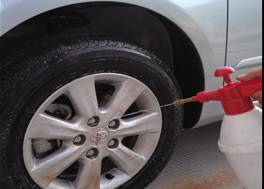
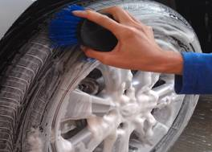
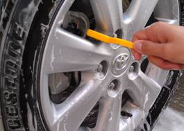

当前位置：首页 > 实训项目与考核 > 实训项目清单
项目流程
表2 轮胎、轮毂清洗护理流程
| 环节 | 项目 | 具体程序 | 操作目的及注意事项 | 作业示意图 |
|---|---|---|---|---|
| 1 | 喷洒洁亮剂 | 1）对轮胎轮毂喷洒铬金胎铃洁亮剂。 | 目的： 1）使清洗更加省时、省力。 |
 |
| 2 | 冲洗 | 1）高压水枪的水压调到高压。 2）对挡泥板及轮胎的外挡圈进行反复冲洗。 3）待没有明显的污水流出，对汽车轮胎和轮毂进行清洗。 |
目的： 1)冲掉轮胎轮毂上溶解下来的油污和水溶性的灰尘颗粒。 |
|
| 3 | 喷涂轮毂清洁剂 | 1）用泡沫机对轮胎轮毂喷涂比例适当清洁剂或者泡沫。 | 目的： 1)进一步溶解轮毂上的非水溶性污渍。 |
|
| 4 | 刷洗 | 1）用圆柄轮毂刷子或者海绵清除轮毂上的顽固污渍。 2)对轮辐间的间隙等难以刷洗的部位，采用牙刷刷洗。 3）对生锈的部位采用钢丝刷刷洗。 |
注意事项： 1)刷洗时，应选择合适材质的刷子，用力均匀。 2）对于锈蚀的部分，应进行除锈处理。 |
 |
| 5 | 擦干 | 1）擦干轮胎上的水分，为下一步保养做准备。 | 注意事项： 1）轮胎要足够干燥，以免影响到保养效果。 |
|
| 6 | 涂抹轮胎保护剂 | 1）在干燥的轮胎表面涂抹轮胎保护剂，或者采用喷涂的方式。 | 注意事项： 1）因为轮胎保护剂一般对金属都有一定程度的腐蚀作用，所以如果保护剂一旦与金属部位接触，应立即擦除。 |
上一页 1 2 3 4 5 6 7 8 下一页